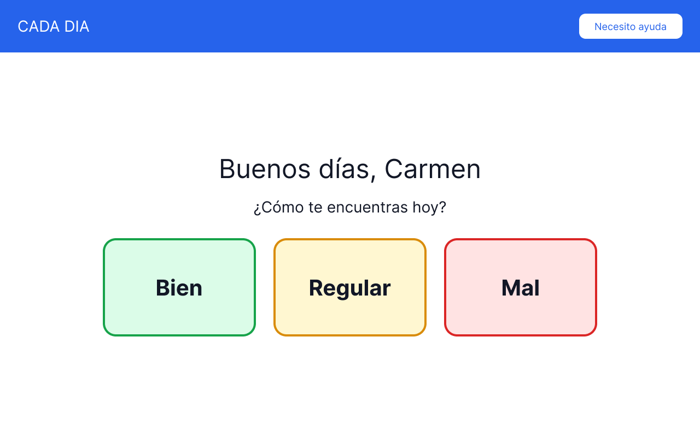
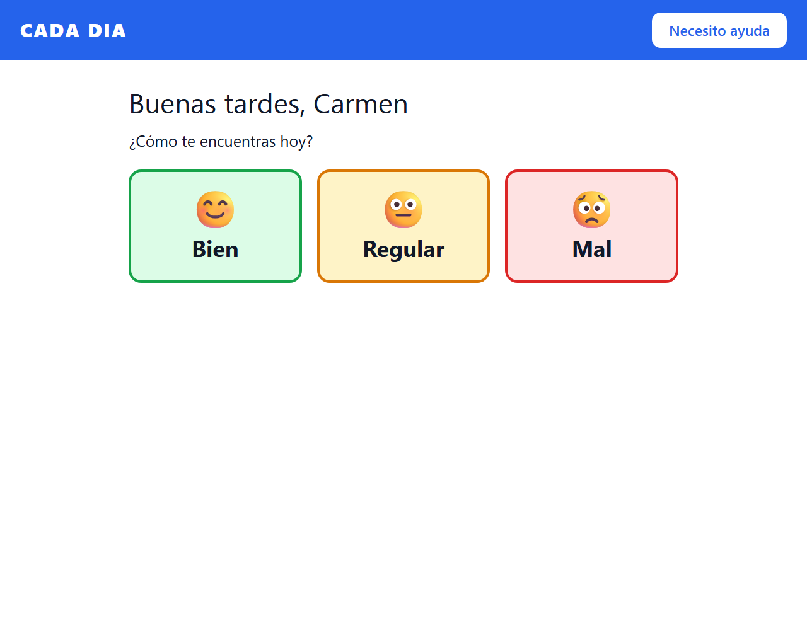
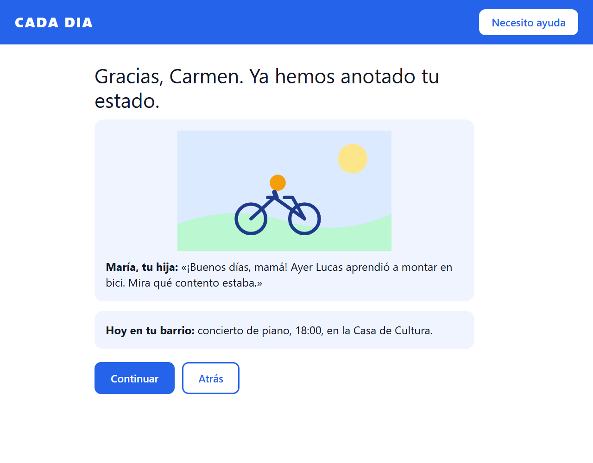
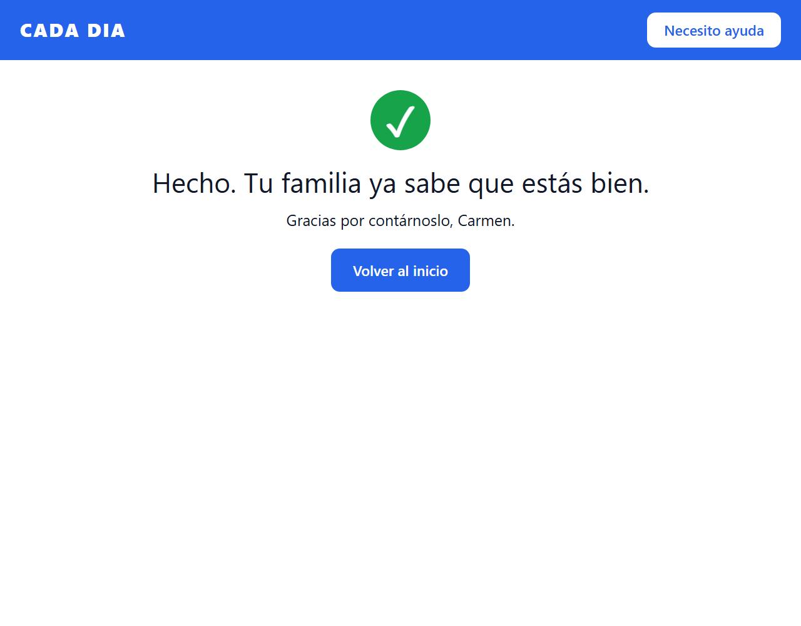

Un toque al día para que las personas mayores que viven solas
y sus familias estén tranquilas
Grupo G01 · Proyecto intermodular DAM/DAW · Tema: la soledad de las personas mayores
| Fase | Qué hicimos | Resultado |
|---|---|---|
| Design Thinking | 5 «¿Por qué?», causa raíz, propuesta de valor | Idea Cada Día |
| Figma | Pantallas desktop y móvil, componentes, Ready for dev | Prototipo |
| SDD | constitution, AGENTS, spec, plan, tasks | Alcance y requisitos EARS |
| MVP | HTML + CSS + JS, 16 pruebas automáticas | Piloto ejecutable |

Figma: 01 Inicio

MVP: inicio
1. Elegir estado

2. Contenido del día

3. Tu familia ya lo sabe
src/store.js) para poder probarla sin navegador.npm test).